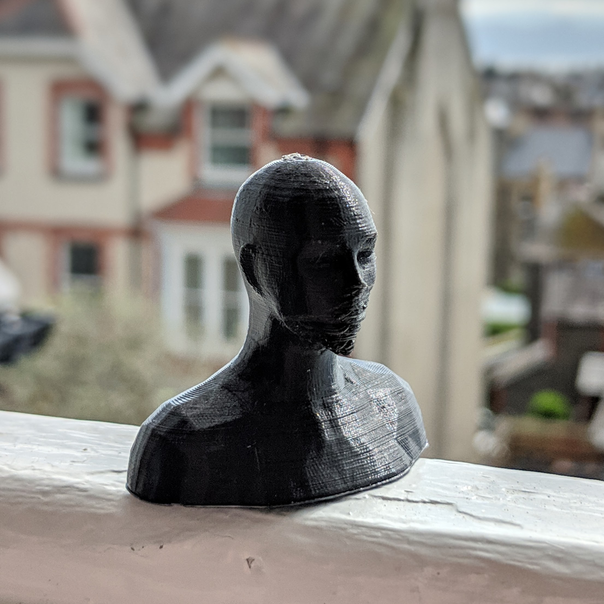
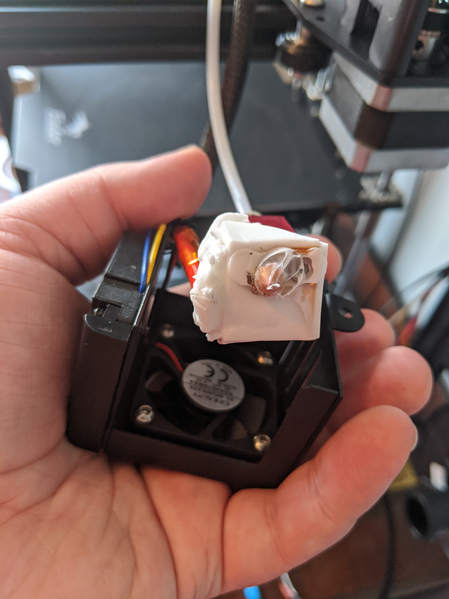
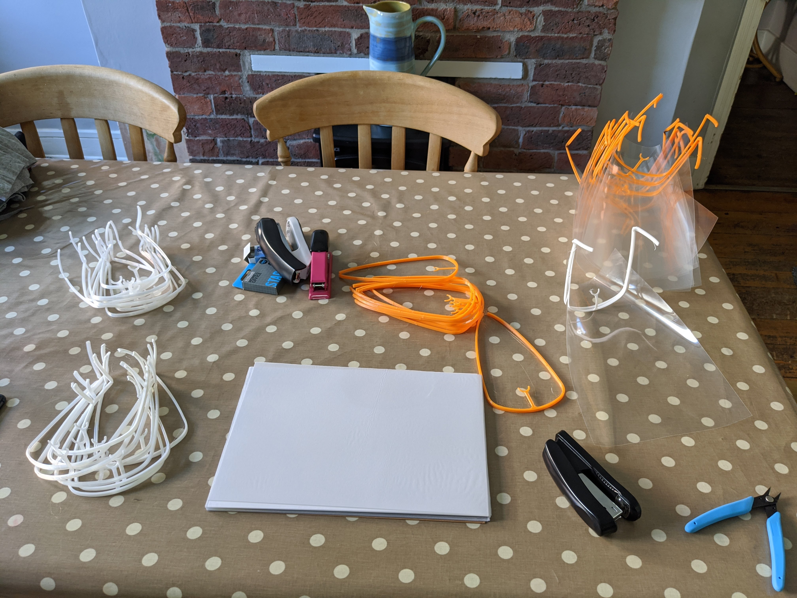
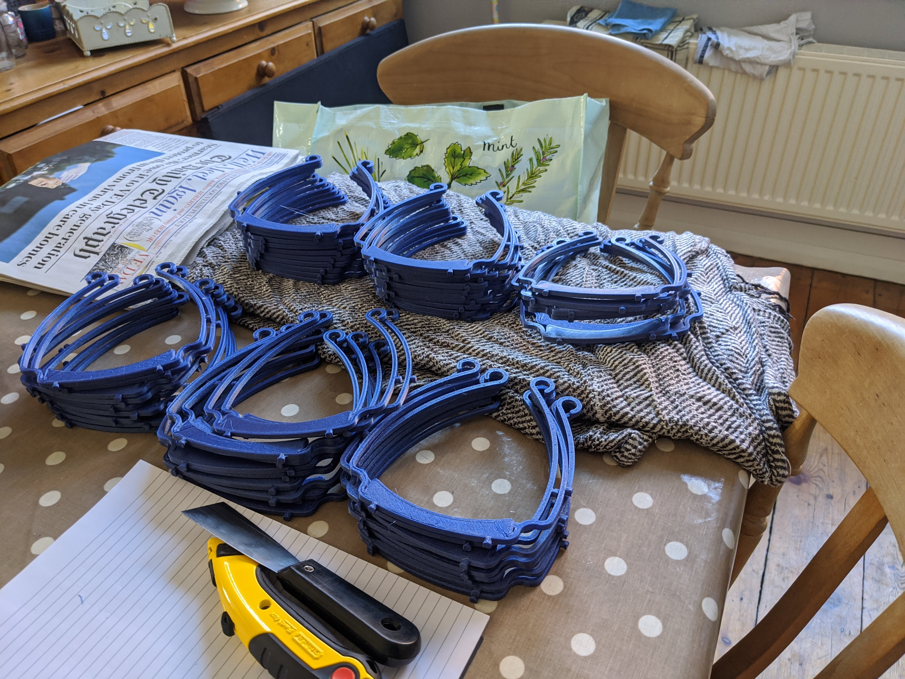

3D Printing for the NHS
Background
I’ve followed the development of 3D printing fairly closely over the past few years, but grew interested enough in it in 2019 to make it a part of my undergraduate dissertation.
Using Computer Vision tools, I used a model based approach to recreate a human head, so that it could be 3D printed. I’ll spare you most of the detail, but it didn’t work very well.

Covid–19 and PPE
When the astonishing lack of preparedness on the part of the UK government first became aware to me I wasn’t surprised. I’ve been a Raving Momentum Stalinist Trotskyist Corbynite Marxist Thug for the past few years, so I’m all too aware of the Conservative government’s lack of shits regarding the health service.
For the uninitiated, frontline healthcare staff didn’t have enough masks, face shields, or scrubs. The ones they did have were out of date, often by years. The government then chose not to opt into a massive Europe wide operation to procure PPE.
I wanted to help, and as luck would have it a video popped up in my Facebook news feed. A local man was using his 3D printers to manufacture face shields, I got in touch, and then ordered my own printer and some filament, how hard could it be to get started?

I ordered a Creality Ender-5, and got to work.
There were some teething problems… 
The bed levelling procedure took a while to master, but with that done I was off to the races! (Not Cheltenham)
Face Shields
The most useful thing I could produce was face shields. I could print a disposable headband in around 20 minutes, to which I would staple a sheet of acrylic.
These seemed great in theory, but after some provisioinal feedback from the ambulance service, stating they would fall apart in a small breeze, we moved onto more structurally sound designs.

The following design is what has been come to known as a Verkstan, after the Swedish 3D printing firm.

These are far better than the disposable design, and have recieved much better feedback from frontline healthcare staff.
I’m currently producing around 10 of these a day. It’s a drop in the ocean compared to what’s required, but I know it’s helping.
Mutual Aid
I couldn’t do this alone, and since the beginning have been part of a maker community that is now also producing scrubs and face masks.
These are all being distributed for free to those who need it through our online portal.
fin
I’ve really rushed this post, and it probably makes no sense, but wanted to fill up the white space on my blog hompage.
Hope you enjoyed it, solidarity forever.